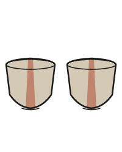

1 / 1Stripe Bowls 2026
About This Piece
A matching set of bowls thrown at Kentucky Mudworks in Brown Ranger stoneware. Wide, open forms with a flared rim—made to be held as much as used. Each carries a single vertical stripe left raw by a wax resist, running from rim to foot where the glaze couldn't reach.
The Clay
Brown Ranger is an iron-rich brown stoneware that brings texture and warmth to every piece made from it. The fired surface shows the speckled, earthy quality of the clay body itself—no surface treatment needed beyond the clear glaze that seals the piece and lets the material read clearly.
Thrown as a set, these bowls were made in the same session so they'd share a consistent wall thickness, opening width, and foot diameter. They're meant to live together.
The Wax Resist Stripe
After bisque firing, a line of wax was painted down the exterior of each bowl before glazing. The liquid clear glaze beads off the wax; where wax was applied, the clay fires raw and exposed. The contrast between the smooth, slightly glossy clear glaze and the matte raw clay is the whole aesthetic of the piece.
The wax is applied by hand, so each stripe runs slightly differently—same concept, different line. Like the throwing itself.
Making Process
Thrown at Kentucky Mudworks, trimmed to a small foot ring that lifts the bowls cleanly off the table. After bisque, wax applied, then dipped in clear glaze. Fired in a reduction kiln that brings out the iron in the Brown Ranger body, deepening the warm orange and brown tones in the raw stripe and through the clear glazed surface.